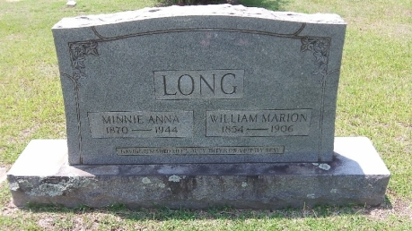
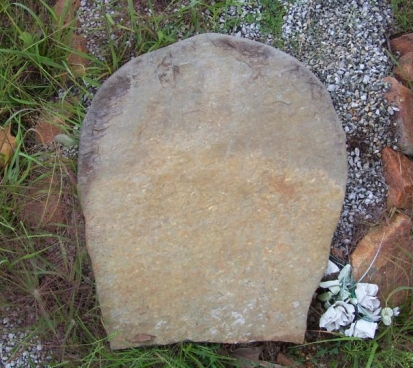
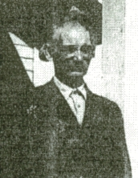
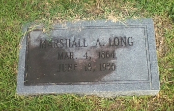
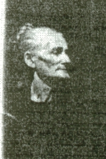
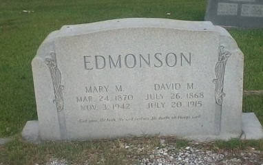

|
Peter
Long of Fannin Co GA > Peter
Long, Jr of Marshall Co AL
Peter Long,
Jr. Peter Long
Jr was born about 1826 in Burke County North Carolina to Peter
Long Sr and his wife Nancy Mashburn. Peter spent most of his
youth an teen years living in North Carolina. After his grandfather
James Long died in 1843, his father, mother and is extended Long
family of uncles and cousins began to move south to the new land
opening up in the mountains of North Georgia.
Peter, his wife Amanda and two daughters Ann and Elvira Long
were all included in a pre-1900 membership list of the Beulah
Baptist Church of Albertville Marshall County AL. All but Elvira
had been received by letter from another church; On 19th of February
1887 Peter Long first appears in the opening pages to extant
minutes of the Beulah Baptist Church. On that day he was appointed
as a correspondant to the Mt Zion Church as well as to the Macedonia
Church. Later that year on 17 December, Peter acknowledged to
the church elders that he drank too much and requested forgiveness.
Apparently his sin was minor because at the same meeting, Peter
was hired by the church for "keeping of the house"
at a salary of $9 per year. He is also likely the "Brother
Long" who on 15 April 1893 was sent by the church to visit
Brother Corbin who had been "accused and rumored of dancing."
A 1901 list of members appearing in the Beulah church minutes
noted that Peter Long had died.
The Peter Long Jr Family
Peter Long Jr born about 1826
in Burke Co NC; He moved with his family to Union Co GA in the
mid-1840s and married Amanda Rhoades soon after. He appears on
the 1849 and 1851 Union Co GA tax list, but is skipped in the
1850 federal census; He lived in Murray GA in 1860 census and
Marshall County AL in 1870 and 1880 census. He died Sunday, March
18, 1900 and was buried in the Beulah Baptist Church Cemetery
Albertville, Marshall Co Alabama.
Obituary:'Guntersville Democrat' dated March 22, 1900 "Marshall.
Uncle Peter Long died Sunday after a long illness. He was one
of the oldest citizens of this county and was a consistant member
of the Baptist church. The bereaved family have the sympathy
ofthe entire community."
married Amanda Jane Rhoades likely about 1853 in Fannin
Co GA. She was born about 1826 in South Carolina; Her
surname is provided in the death certificate of daughter Mary
Edmondson; She is enumerated in the 1900 federal census soon
after the death of her husband and in 1910 she was living in
the household of her daughter Susannah and her husband William
Joseph Rutherford Jr, who had apparently moved into the Long
homestead next door to Marshall A. Long. Amanda was age 82. Amanda
died 20 Mar 1912 in Marshall Co AL, age 86y 7m 6d (death certificate).
Her death is recorded in the Beulah Baptist Church minutes as
9 March 1912; Her parents are not known, but she may be a sister
of Marshall Andrew Rhodes who lived in the Skeinah area of Fannin
Co GA
children:
1(i). William Marion Long born 1854 in Georgia; He
was living at Duck Springs Etowah Co AL in 1880 (his 'cousin'
Edward J Crouch b 1860 TN is living in his household); He
and his second wife Minnie were members of the Beulah Baptist
Church in Albertville, Marshall Co AL in the 1890s. On 14 July
1896, they were granted letters of dismission from the membership
of the church. In 1900, he and his family were enumerated in
the census living at Duck Springs, Short Creek Etowah Co AL;
He was a farmer and owned his property; He and his wife raised
their large family near Sardis, Etowah Co Alabama. Their homeplace
is now the site of the Sardis Baptist Church. He died 1906 and
was buried at Sardis Cemetery, Sardis, Etowah Co AL

William Marion Long
married 1) Josie (Julia) Barksdale on 7 December 1876 in DeKalb
Co AL; She died between 1888 and 1891; She was the daughter of
Sherrod Barksdale and Elinzer Owen
married 2) Minnie Anna Strawn about 1891 (married 9 years
in 1900 census) She was b Sept 4 1870; She was widowed and raising
her children at Remlap, Blount Co AL in 1920, age 49; She died
Apr 9 1944, age 73; She was the daughter of Roe Strawn and Casie
Tippins
children:
2(i). Joseph H. Paul Long born 1 May 1879; Lived at
Lydia DeKalb Co AL in 1910; He was killed on 28 Dec 1922; buried
at Sardis AL;
married Naomi P (Omie) Thompson
2(ii). Amanda Jane Long born about 1880; She lived
with her parents in 1900, age 19; She died 27 July 1928 in Gasden
Etowah Co AL, age 47; Buried Forrest Cemetery, Gadsden AL; She
married James Arthur McCollum who was killed. She apparently
married second ___Fleming;
2(iii). Sidney Mayfield Long born 17 May 1881 (source:
WWI draft); He lived with his parents in 1900, age 16; He lived
with his brother Paul's family in 1910 and at Walker's Chapel
DeKalb Co AL in 1920; He died before 1930
married Mamie Webb - she was born about 1898; widowed and
living with children in Etowah Co AL in 1930 census
2(iv). John Roe Long born 26 January 1886; He lived
at Corinth DeKalb Co AL in 1910, Jackson Co in 1920 and Rock
Collins DeKalb Co in 1930; He died 9 Feb 1931;
married Bertie Bell
2(v). Anna Lee Long born 1 May 1888; age 12 in 1900
census; She died 11 March 1958; She married Tennie Brasseale
2(vi). Luther M. Long born 1890; He was not living
with his parents in the 1900 census (age 10) He was living at
Dutton Jackson Co AL in 1910; Living at Graham Beat, DeKalb Co
AL in 1920; He died 20 Sept 1922 (Death cert says d. 1 Oct 1922
at Ralle Hospital, Gadsden Etowah Co AL)
2(vii). Thomas Newton Long born 5 Nov 1893; He lived
with his wife in the house of his widowed mother in Blount Co
AL in 1920; He lived at Slate St Clair Co AL in 1930 and 1940;
He died 26 June 1957;
2(viii). Albert Houston Long born 10 Oct 1895 in Boaz
AL (source: Draft Reg.); In 1910, he was a farm laborer living
in the household of James McClendon in Short Creek, Etowah Co
AL; In 1917 he signed his WWI draft regitration by mark at age
21; He was a farmer living at Route 1 Chavies AL, DeKalb Co;
He had blue eyes and black hair; He lived at Short Creek, Etowah
Co AL in 1920; He and his wife lived in DeKalb Co AL in 1940
census; He died 5 Nov 1960 at Ft Payne, DeKalb Co AL, age 65.
2(ix). Jessie Lee Long born about 1897 (twin) died
young; Not living with parents in 1900 census
2(x). Cassie Mae Long born about 1897 (twin) died
young; Not living with parents in 1900 census
2(xi). William Harvey Long born 25 Aug 1900; In 1917,
he was a farmer/rancher living in Stonewall, Pontotoc Co Oklahoma
at the time of his WWI draft registration; He had blue eye and
black hair and named his mother Mrs Minnie Long as then living
at Boaz Alabama; He lived with his widowed mother in 1920 census;
He and his wife were living in Chattanooga Hamilton Co TN in
1930 and 1940; He died 20 Aug 1961;
married Edna L. Hill
2(xii). Lela Selethia Carolyn Long born 25 Aug 1902;
She died 3 July 1987; She married Earl Hubert Smith
2(xiii). Teara Eula Long born 11 July 1905; lived with
her widowed mother in 1920 census; She died 4 Nov 1975; buried
at Cloudland, Lafayette Walker Co GA; She married John Clinton
Cooper on 11 March 1921 at Altoona Blount Co AL;
1(ii). Nancy Jane Long born April 24 1854 at Fannin
Co GA; She and her husband were living near her parents in the
1880 federal census. By 1900, the Chambers family had moved to
the Mill Creek District of Lumpkin Co GA; Nancy died July 10
1924 (death
cert named parents); Buried at Mill Creek Cemetery, Lumpkin
Co GA.

N. J. Chambers, b 1854, Mill Creek Cemetery, Lumpkin Co GA
married William Harrison Chambers on 13 Aug 1876 at the residence
of Peter Long according to the marriage record. Consent for the
marriage was given by both fathers. He died on 2 June 1931 in
Lumpkin Co GA
children:
2(i). William M. Chambers born October 1878 in Alabama
according to the 1900 census
2(ii). Joseph Henry Chambers born December 1881 in
Alabama according to the 1900 census; Living at Mill Creek, Lumpkin
Co GA in 1910, 1920, and 1930; He died May 15, 1932; Buried Mill
Creek Cem, Lumpkin Co GA
2(iii). Mary L Chambers born May 1885 in Alabama according
to the 1900 census
2(iv). Robert S Chambers born September 1890 in Georgia
according to the 1900 census; living with parents in 1910 census.
2(v). John N. Chambers born 25 July 1897 in Lumpkin
Co Georgia (source: Draft Reg). Married and living at Bright
Lumpkin Co GA in 1917; He died 4 April 1919 of a gun shot wound
at Lumpkin Co GA. Buried at Mill Creek, Lumpkin GA; He was married
at the time of death. (death cert naming his parents).
married Lillie _____ (source: Draft Reg); She was age 27 in
the 1920 Lumpkin Co census, widow; She and children lived with
the elderly Harrison Chambers (age 71) in 1930 census; She was
age 51 and living with her son Howard in 1940 census
1(iii). Henry L. W. Long born about 1857 in Georgia;
He witnessed the signature of his parents for the 1890 marriage
license of sister Mary Long to David Edmondson; He is not living
in his widowed mother's household in the 1900 census. He left
home just about 1900 and never heard from again. According
to family tradition passed down in the William Marion Long family,
Henry became angry that he did not receive land from his parents
at the time they distributed their holdings to the various children
prior to their deaths.
1(iv). Elizer Newton Long born December 16, 1856 in
Murray County Georgia; He lived in Albertville Marshall County
Alabama; He died 25 February 1922 in Albertville and is buried
at Beulah Baptist Church Cemetery in Albertville.
married Mary Florence Williams on 29 Jul 1883 at Marshall
Co AL; She was born GA; died 13 Jan 1919 at Jefferson Co AL age
53; buried Beulah Cem. Albertville AL; She was the daughter of
James M. Williams and wife Wiley Ann Brasher
children:
2(i). Henry Luther Long born 4 April 1885 in Albertville,
Marshall County, Alabama; He was age 15 in the 1900 census and
was attending school at the time and had attended school for
10 months that year; At the time of the WWI draft registration
on 12 September 1918, he lived at Route 3 Boaz Alabama; He lived
in Albertville at the time of the 1930 census; He died 31 December
1943 in Albertville, Marshall, Alabama and was buried at Blessing
Cemetery the next day.
married Getty P. Dickson on 1 January 1911 in Marshall County
AL; She was born 22 May 1891; She died 7 June 1969 and was buried
next to her husband in the Blessing Church of Christ Cemetery
in Albertville Marshall County AL
children:
3(i). Rader Lafayette Long born 24 October 1911 in
Albertville AL; He was 28 and living with his parents at the
time of the 1940 census; He died 18 November 1961 in Boaz Alabama,
age 50 and buried at Memory Hill Cemetery in Albertville Alabama
married Iva Oliver
3(ii). Carl Austell Long born 12 Septermber 12, 1915;
He was 15 and living with his parents at the time of the 1930
census; He died 6 February 1955 in Marshall County AL, age 39;
Buried Blessing Cemetery, Marshall Co AL; He and his wife
had no children.
married Odell Pierce
3(iii). Virgil Newton Long born 6 June 1919 in Albertville
Alabama; He was 20 and living with his parents at the time of
the 1940 census; He served in the US Navy during WWII; He died
4 February 1991 in Marshall County and was buried at Memory Hill
Cemetery in Albertville Alabama
married Audrey D. Slaton; She was born 14 January 1922; She
died 30 December 2006 and was buried beside her husband.
2(ii). Beulah Idella "Ider" Long born 13
July 1888; She was 11 in the 1900 census and was attending school
at the time and had attended school for 10 months that year;
She married in 1905 but was soon widowed and then lived with
her parent in the 1910 census; She died 8 July 1944 and was buried
in the Blessing Church Cemetery, Albertville Alabama.
married 1) Luther Gamble on 3 December 1905 in Albertville
Alabama; He was born 11 October 1883; He died 7 October 1906
about 9 months after their marriage. He was buried at Beulah
Baptist Church Cemetery.
married 2) George W. Roe on 1 September 1912 in Albertville
Alabama; He was born 19 February 1881; He was first married to
Velma Ragsdale and had one son Charles Roe; He died 12 February
1965
2(iii). Charles Wilburn Long born 6 December 1891 in
Albertville, Marshall Co AL; He was age 8 in the 1900 census;
He died 20 November 1967 in Albertville, age 76; buried Marshall
Memory Gardens Cemetery, Albertville AL
married Indiana Josephine Shirley; She was born 31 July 1897
in Dekalb Co AL, daughter of Marcus Lee Shirley and Laura Clementine
Dowdy of DeKalb Co Alabama; She died 30 July 1991 Albertville,
Marshall Co AL, age 94; buried Marshall Memory Gardens Cemetery,
Albertville AL
2(iv). James Arthur Long born 26 October 1894 in Marshall
County Alabama; He was age 5 in the 1900 census and 15
in the family's 1910 census household; His WWI draft registration
in 1917 stated he was tall and slender, with brown eyes and dark
hair. He was partially paralized on the right side; He was 45
years old at the time of the 1940 census, enumerated in the Jay
Bird District of Marshall County on the old family land near
his brother Henry Luther. His occupation was farming; He died
15 July 1945 and was buried in the Beulah Baptist Church Cemetery
in Albertville Marshall County AL
married Iva Fortson on 17 November 1926 in Marshall County
Alabama; She was born 5 December 1905; She died 24 January 1969
and was buried next to her husband in the Beulah Baptist Church
Cemetery in Albertville Marshall County AL
children:
3(i). Ila Jo Long born about 1928, age 12 in 1940 census;
She suffered from diabetes and died young; She married Robert
Nelson; They had one child who was born dead
3(ii). Mary Julia Long born about 1930, age 10 in 1940
census; She married Fred Burdette and lived in Albertville on
old Long family property
2(v). Effie Long born 9 November 1899; She was an infant
age 6 months in the 1900 census; She and her husband lived in
Attalla, Etowah County AL; She died there on 22 September 1937,
age 37 and was buried in the Beulah Baptist Church Cemetery in
Albertville Marshall County AL
married Larkin N. Campbell on 3 August 1919 at her home in
Marshall Co AL by J M Chadwick ; In the 1940 census, he was 41
and remarried to a woman named Alma; lived in Attalla Etowah
County and was listed as a salesman for Gulf Oil Company and
later owned a gas and oil business in Attalla; He was supposedly
very unkind to Effie;
2(vi). Homer Newton Long born 17 Septermber 1905; In
1928, he purchased his parents' land from his brothers and sisters;
At the time of the 1940 census he was 34, living on High Point
Road near Albertville and was an owner operator of a gasoline
station and general store; He died 12 March 1980 and was buried
at Memory Hill Cemetery, Albertville, Marshall Co AL
married 1) Nellie Mae Edmonson on 10 January 1925 in Marshall
County Alabama
married 2) Velma Rigsby on 11 April 1936 in Marshall County
Alabama
1(v). Susannah (Ann) Long born about 1859 in Georgia.
She was likely named after her aunt Susannah Long, wife of William
Henry Long of Fannin Co GA. She was a member of the Beulah Baptist
Church in Albertville, received to membership by letter prior
to 1900; She was unmarried and living with her widowed mother
at age 38 in the 1900 census; She was received into the church
by letter once again in 1904 and appears in a 1905 list of members
of the church (Rutherford married name). She and her husband
were apparently occupying the old Long homestead next door to
her brother Marshall Andrew Long. Her elderly mother was living
with the family at the time of the 1910 census. Susan was dismissed
by letter from the Beulah church on 12 June 1913; She died before
the death of her husband in 1926; Her place of burial is not
known.
married William Joseph Rutherford Jr. soon after 1900; He
was born 9 October 1877 according to Rutherford sources; He lived
in Marshall County AL., farmer; He died 30 Mar 1926 age 51 at
Union Grove, Marshall Co AL, a widower at the time of death (death
cert); He was son of Joe Rutherford and Eliza Cragle (Craig)
who after the death of wife Eliza married Susannah Long's younger
sister Eliza E M Long (see below).
children:
2(i). Walter H. Rutherford born about 1904 in Alabama,
age 6 in 1910 census. Long family tradition says that a Rutherford
child drowned, so possibly this Walter who is untraced after
1910.
1(vi). Eliza Elvira (Virie) M. Long born about 1860
in Murray County GA; She was a member of the Beulah Baptist Church
in Albertville, received by baptism at the church prior to 1900.
She was unmarried and living with her spinster sister Susannah
and recently widowed mother in the 1900 census. She married soon
after 1900 and moved with her husband to Jack County Texas, where
they ultimately divorced. She returned to Alabama and was living
in Marshall Co AL in 1910 census in the houshold of her sister
Susannah Rutherford; Her place of burial is not known.
married William Joseph Rutherford Sr. by
license dated 29 October 1900 in Marshall County AL; He was
born April 27, 1852 and died January 29, 1928, buried in Texas.
He was the father of the husband of Susannah Long, sister of
Eliza; He lived in Jack Co TX in 1910 away from his wife; 1910
Jack Co TX census says divorced. In a 1912 deed in Marshall Co.
AL William J. Rutherford of Jack County TX, sold land to Marshall
Andrew Long, his brother in law;
children:
2(i). Marvin Montgomery Rutherford, born 29 July 1901
in Alabama (SSDI), age 8 in 1910 census; He is living with his
mother in the household of his aunt and uncle Rutherford in 1910.
He is a prisoner in the county jail in Fannin TX at the time
of the 1920 census. According to a Rutherford family source,
he died in Arkansas (SSDI: Pike Co Arkansas, March 1983). He
had several half brothers from his father's prior marriage
"Uncle Marvin was a very nice man, always laughing.
Mom said that he visited when he could and he always came from
Sacramento. She said he was married once but that his wife died
in childbirth and he never remarried. She never knew her. My
Grandparents lived in Arkansas till abt. 1954 and then moved
to Oregon for a while they were back in Arkansas when my brother
was born in 1963. Uncle Marvin visited both places. My parents
said that Grandpa Eliga “ Lige “ [Rutherford] talked
about an older brother who worked on the street cars in Sacramento.
Possibly this is why Marvin lived there. When he got sick he
went back to be with family before he passed and that is why
he died in Arkansas and is buried there. Mom said that Uncle
Marvin always treated the children kindly." - Karen Shockley,
Oregon.
1(vii). Marshall Andrew Long born 4 Mar 1868 (1864?)
GA; He was a farmer of the old Peter Long homestead near Albertville
Alabama; He died 18 Jun 1939 in Marshall Co AL, age 71y 3m 14d,
buried Beulah Cem, Albertville AL
|
 Marshall
Andrew Long |
 |
married 1) Emma Whitehead by license
dated 12 August 1902 in Marshall Co AL; She was born Aug
13 1868; She died Nov 12 1912; buried Beulah Baptist Church Cemetery,
Albertville, Marshall Co AL
married 2) Dora Pansie Light Caldwell by license
dated 19 September 1917 in Marshall Co AL; She was b Nov
30 1890; d Mar 17 1976; buried Beulah Baptist Church Cemetery,
Albertville, Marshall Co AL
children:
2(i). Vera Long born March 1910, died October 1913;
buried Beulah Baptist Church Cemetery, Albertville, Marshall
Co AL, age 3.
2(ii). Susie Long born 12 June 1911; She died 1974
in Arkansas; She married James Haltiwanger
2(iii). Limon Andrew Long born 25 March 1919; He lived
on the old Peter Long homestead in Albertville, Marshall Co AL;
He died 12 Jan 1985; buried Beulah Baptist Church Cemetery, Albertville,
Marshall Co AL
married 1) Alice Laymon; she was born 7 July 1918
married 2) Betty Jo Cooper; She was born 24 December 1932
(no children by this marriage)
2(iv). Ima Emma Long born 12 April 1921; She died 6
July 2001; She married Verdell Cecil Roberts; buried Beulah Baptist
Church Cemetery, Albertville, Marshall Co AL
1(viii). Mary Maria Long born 24 Mar1870; She and her
husband were living in the Jay Bird section of Marshall Co AL
in 1900 and in 1910 in the Lathamville Road area; She died 3
Nov 1942 at Albertville, Marshall Co AL, age 72 and is buried
at the Beulah Baptist Church Cemetery in Albertville.
|
 Mary
Long Edmonson |
 |
married David Monroe Edmonson by license dated 19
December 1890 at Marshall County AL. He was shot and killed
on 20 July 1915 by a man named Kuykendall in Albertville. He
is buried at Beulah Cem. Albertville AL; Son of Marcus Edmonson
and Mary Ann Hamilton
The Huntsville Daily Times - July 21 1915 - T. W. [sic]
EDMUNDSON SLAIN BY CHARGE OF BUCKSHOT - GADSDEN, Ala., July 21
– Returning to his home from Albertville where he had spent
the morning on business, T. W. [sic] Edmundson, aged about 45
years, a prominent farmer living five miles east of Boaz, near
the old Fenton post office was assassinated this morning. A charge
of buckshot had been fired into his head. According to information
secured here this afternoon, Mr. Edmundson had gone to Albertville
to transact some business. He finished his work at Albertville
during the middle of the morning and started for his home. The
team arrived at the Edmundson home shortly after 10 o’clock
and the lifeless body was lopping in the seat. There were twenty
three buckshot in the head and shoulders. The shooting occurred
on the road near the home of C. Kuykendall and a gun was found
near the scene of the shooting. It is said that there has been
trouble between Edmondson and Kuykendall for several years over
five feet of land on a line between the two farms. Kuykendall
could not be located and the officers are still searching for
him.
Alabama Supreme Court Case - Appeal from Circuit Court
of Marshall County - Mary M Edmondson vs C. Kuykendall. Judgement
for the plaintiff, and defendant appeals. Reversed and remanded.
"On July 20, 1915, Kuykendall killed plaintiff (appellee’s)
intestate, Edmondson, by shooting him with a shotgun. The action
is for damages under the homicide statute. The defendant (appellant)
sought to justify himself by recourse to the doctrine of self-defense.
These men had entertained for each other a strong hostility during
a long period next preceding the tragedy. Their difference arose
over a dispute with reference to a line dividing their farms.
They had either fought or threatened to fight on several occassions;
and direful threats each toward the other, are attributed to
each of them. When the defendant shot Edmondson, Edmondson was
in the public road in his buggy drawn by a mule, and defendant
was on his front porch, from which point he fired two shots at
Edmondson. Plaintiff’s theory was that defendant, being
aware that Edmondson had previously during the morning passed
up the public road and would likely later return to his home,
awaited his anticipated presence in the public road, and was
prepared and intended to shoot Edmondson when Edmondson came
within shotgun range from the defendant’s nearby porch,
which design, the plaintiff contended, defendant carried out;
Edmondson not firing any shot or making any effort to draw his
weapon or to fire a shot. On the other hand, defendant’s
insistence was that he (defendant) had, just previous to the
shooting, gone to the woods on his place for the purpose of killing
a squirrel; that with gun in hand he came around a corner of
his dwelling, with a view to entering the house by the way fronting
the public road, almost at the same time Edmondson arrived at
a point in the road nearly opposite defendant’s front steps;
that defendant, without then seeing Edmondson, walked up his
front steps, with his gun on his shoulder, to the next step to
the top, and was brushing dirt off his shoes, when he saw Edmondson
stop his mule and give unmistakable signs of a purpose and an
effort to draw a pistol from the waistband of his trousers; that
defendant then made a step or two to the floor of the porch,
and thence to a point nearly behind a pillar of the porch, wherefrom
he at once flred the first shot at Edmondson, who, the defendant
asserts, had by that time fully drawn his pistol; that the mule,
frightened by the shot from defendant’s shotgun, started
with a jump, and, swerving somewhat from the roadway, proceeded
about 25 feet, when defendant shot a second time, having in the
meantime, discharged the empty shell and reloaded the single-barrel
gun by the use of the automatic mechanism; that between the time
the defendant fired the first and second shots Edmondson had
his pistol in his hand, ready for use, and continued to face
the defendant; that the mule went on down the road, Edmondson,
when last seen by defendant, being in the usual sitting posture
of one riding in a buggy; and that defendant did not know until
some hours afterwards that he had wounded or killed Edmondson....The
jury awarded the plaintiff damages in the sum of $5,000"
Southern Reporter, Vol 87 - "...the defendant [Kuykendall]
was originally indicted for murder in the first degree, and was
tried and convicted of manslaughter in the first degree, and
on appeal the case was reversed. Kuykendall v State . Upon the
second trial the defendant was again convicted of manslaughter
in the first degree, and his punishment fixed at three years
in the penitentiary, and from this judgement of conviction he
appeals to this court....The judgment of conviction is affirmed.....The
application for rehearing is overruled."
Email January 2017: Mary Maria Long was my great-grandmother.
Her husband was murdered by Kuykendall and I vividly remember
stories about it when I was growing up. Reading the Huntsville
Times article was interesting yet very sad - even after 100 years.
My grandfather, a young boy at the time, was sent back into the
field the day of the murder to finish the plowing his father,
David Edmonson, had halted in order to go into town for supplies.
David Edmonson plowed barefooted and left his footprints in the
freshly plowed rows which my grandfather walked in to finish
plowing the field. He cried as he walked in his dead father's
footprints.
|